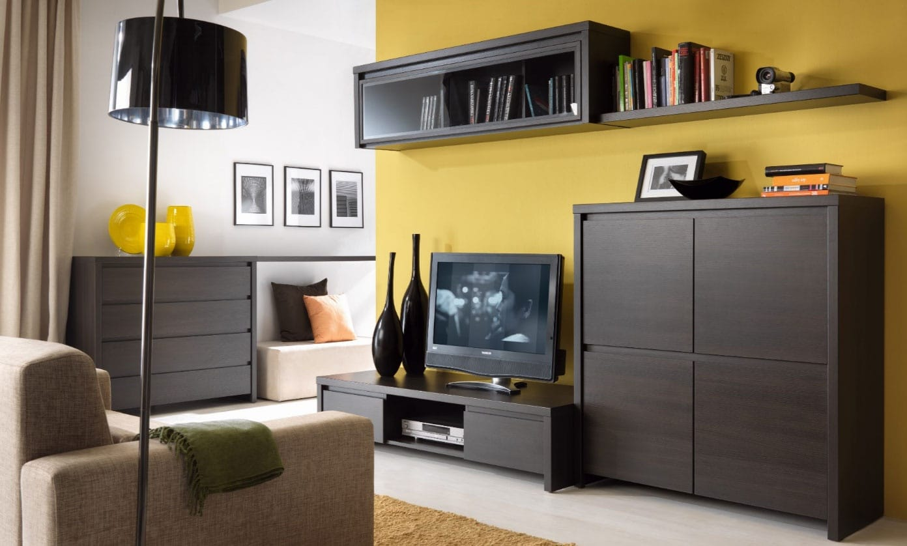

Laminuotos grindys
 Savanorių pr. 290, Kaunas
Eligna
312 Eligna 861 Eligna 896 Eligna 915 Eligna 918 Eligna 995 Eligna 996 Eligna 1043 Eligna 1157 Eligna 1184 Eligna 1235 Eligna 1300 Eligna 1304 Eligna 1896 ElignaEligna kolekcija – išsiskiriančios vandenį atstumiančiu HydroSeal paviršiaus padengimu, tai lentų grindys be V formos griovelio, pabrėžiamas grakštus perėjimas tarp lentų (Impression savybė). Šios grindys pasižymi spalvų ir stilių sąveika bei natūralia išvaizda ir pojūčiais. Svarbiausios Quick Step grindų savybės, kuriomis galite neabejoti, yra funkcionalumas ir kokybė. Įdomūs raštai papuoš bet kurį interjerą, kuris atrodys šiuolaikiškai ir nepraras savo žavesio. Kaip ir visose Quick Step kolekcijose ypatingas dėmesys yra skirtas grindų dizainui, grindys atrodo natūraliai ir nepriekaištingai.
Eligna laminuotos grindys priskiriamos 32 naudojimo klasei, todėl jos gali būti naudojamos visose gyvenamosiose patalpose bei vidutinio intensyvumo komercinėse patalpose. Šios grindys yra itin atsparios nusidėvėjimui, smūgiams, įbrėžimams, buityje naudojamiems chemikalams, cigarečių paliekamoms žymėms, dėmėms, UV spinduliams ir yra sunkiai įsiliepsnojančios. Sunkūs baldai, aukštakulniai ar biuro baldai su minkštais ratukais nepadarys šioms grindims jokių įspaudimų. Naujoji Scratch Guard technologija suteikia viršutiniam sluoksniui išskirtinį atsparumą įbrėžimams. Quick-Step laminuotos grindys turi su laiku nepraeinančias antistatines savybes, kurios leidžia laminuotoms grindims mažiau įsielektrinti. Jos lengvai valomos bei neleidžia kauptis bakterijoms.
Quick Step laminuotų grindų gamintojas – belgų kompanija Unilin bvba, kuri priklauso Unilin įmonių grupei. Unilin yra vieni didžiausių ir žinomiausių
laminuotų grindų gamintojai, novatoriai, išradę laminato tiesioginio presavimo technologiją bei pirmąją grindų elementų sujungimo be klijų sistemą – Uniclic.
• Produkto tipas - aminatas su užrakto sistema
• Ilgis x plotis x storis - 1380 x 156 x 8 mm
• Grindų spalva - šviesi
• Juostų skaičius - 1 juostos
• Grioveliai tarp lentelių - nėra griovelių
• Naudojimo klasė - 32 klasė
• Dilumo klasė - AC4
• Šildomos grindys - galima kloti ant vandeniu šildomo pagrindo
• Pagrindas - vandeniui atspari HDF plokštė
• Įpakavimas - 1.722m2
• Garantija - 25 metų garantija visam gaminiui gyvenamosiose patalpose
• Kaina - 18,49 Eur/m2
Elite
1303 Elite 1304 Elite 1388 Elite 1406 Elite 1491 Elite 1492 Elite 1493 Elite 1496 Elite Quick Step Elite kolekcijos grindys – tai elegantiškos lentos su V formos nuožulniais grioveliais iš 4 lentos pusių ir stulbinančiai malonia liesti paviršiaus struktūra. Svarbiausios Quick Step grindų savybės, kuriomis galite neabejoti, yra funkcionalumas ir kokybė. Įdomūs raštai papuoš bet kurį interjerą, kuris atrodys šiuolaikiškai ir nepraras savo žavesio. Kaip ir visose Quick Step kolekcijose ypatingas dėmesys yra skirtas grindų dizainui. Elite kolekcijos grindų piešinys gana retai atsikartoja, grindys atrodo natūraliai ir nepriekaištingai.
Elite laminuotos grindys priskiriamos 32 naudojimo klasei, todėl jos gali būti naudojamos visose gyvenamosiose patalpose bei vidutinio intensyvumo komercinėse patalpose. Šios grindys yra itin atsparios nusidėvėjimui, smūgiams, įbrėžimams, buityje naudojamiems chemikalams, cigarečių paliekamoms žymėms, dėmėms, UV spinduliams ir yra sunkiai įsiliepsnojančios. Sunkūs baldai, aukštakulniai ar biuro baldai su minkštais ratukais nepadarys šioms grindims jokių įspaudimų. Naujoji Scratch Guard technologija suteikia viršutiniam sluoksniui išskirtinį atsparumą įbrėžimams. Quick-Step laminuotos grindys turi su laiku nepraeinančias antistatines savybes, kurios leidžia laminuotoms grindims mažiau įsielektrinti. Jos lengvai valomos bei neleidžia kauptis bakterijoms.
• Produkto tipas - laminatas su užrakto sistema
• Ilgis x plotis x storis - 1380 x 156 x 8 mm
• Grindų spalva - šviesi
• Juostų skaičius - 1 juostos
• Grioveliai tarp lentelių - grioveliai iš keturių lentelės pusių
• Naudojimo klasė - 32 klasė
• Dilumo klasė - AC4
• Šildomos grindys - galima kloti ant vandeniu šildomo pagrindo
• Pagrindas - vandeniui atspari HDF plokštė
• Įpakavimas - 1.722m2
• Garantija - 25 metų garantija visam gaminiui gyvenamosiose patalpose
• Kaina - 19,95 Eur/m2
Impressive ultra
1848 Impressive ultra 1849 Impressive ultra 1850 Impressive ultra 1853 Impressive ultra 1854 Impressive ultra 1855 Impressive ultra 1856 Impressive ultra 1857 Impressive ultra 1847 Impressive ultra 1858 Impressive ultra 1861 Impressive ultra 1862 Impressive ultra 3105 Impressive ultra 3106 Impressive ultra 1859 Impressive ultra
Quick Step Impressive Ultra kolekcijos grindys – išsiskiriančios vandenį atstumiančiu HydroSeal paviršiaus padengimu. Jų paviršius visiškai hermetiškas, todėl ant jo nelieka bakterijų, dulkių ar vandens lašų. Dėmės valosi lengvai, tad grindys visuomet lieka idealiai švarios. Grindys priskiriamos 33 naudojimo klasei, gali būti naudojamos gyvenamosiose bei komercinėse patalpose. Quick-Step
laminatas – tai ypatingai aukštos kokybės Belgijoje pagaminta grindų danga, turinti ypač patvarią UNICLIC užrakto sistemą.
Šios grindys yra itin atsparios nusidėvėjimui, smūgiams, įbrėžimams,
buityje naudojamiems chemikalams, cigarečių paliekamoms žymėms,
dėmėms, UV spinduliams ir yra sunkiai įsiliepsnojančios. Sunkūs
baldai, aukštakulniai ar biuro baldai su minkštais ratukais nepadarys šioms grindims jokių įspaudimų. Naujoji Scratch Guard technologija suteikia viršutiniam sluoksniui išskirtinį atsparumą įbrėžimams. Quick-Step laminuotos grindys turi su laiku nepraeinančias antistatines savybes, kurios leidžia laminuotoms
grindims mažiau įsielektrinti. Jos lengvai valomos bei neleidžia kauptis bakterijoms.
• Ilgis x plotis x storis - 1380 x 190 x 12 mm
• Grindų spalva - šviesi
• Juostų skaičius - 1 juostos
• Grioveliai tarp lentelių - grioveliai iš keturių lentelės pusių
• Naudojimo klasė - 33 klasė
• Dilumo klasė - AC5
• Šildomos grindys - galima kloti ant vandeniu šildomo pagrindo
• Pagrindas - QUICK STEP Master Core HDF plokštė
• Įpakavimas - 1.311m2
• Garantija - 25 metų garantija visam gaminiui gyvenamosiose patalpose
• Kaina - 38,49 Eur/m2
Marine
1137871 1137881 1137931 1132801MARINE kolekcija – tai grindų dangos, kurios džiugins mus ilgus metus nekintančia išvaizda, natūralaus medžio tekstūra. Aukšta atsparumo (32 klasė) ilgam garantuoja dangos tvirtumą.
• Ilgis x plotis x storis - 1380x159x10
• Ats. klasė - AC4/32
• Grioveliai - grioveliai iš visų keturių pusių, tinka šildomoms grindims
• Tekstūra: natūralaus medžio paviršiaus tekstūra,
20 metų garantija.
• Kaina - 11,90 Eur/m2
Mars
1137101 1137111 1137161 1137461 1137521 1137861 MARS kolekcija – tai grindų dangos, kurios džiugins mus ilgus metus nekintančia išvaizda, natūralaus medžio tekstūra. Aukšta atsparumo (32 klasė) ilgam garantuoja dangos tvirtumą.
• Ilgis x plotis x storis - 1380x193x10
• Ats. klasė - AC4/32
• Grioveliai - grioveliai iš visų keturių pusių , t inka šildomoms grindim s
• Tekstūra - 3D natūralaus medžio paviršius
• Garantija - 20 metų garantija.
• Kaina - 13,65 Eur/m2
MASSIVUM
1137091 1137131 1137151 1137491 1137511 1137531 MASSIVUM kolekcija – tai grindų dangos, kurios džiugins mus ilgus metus
nekintančia išvaizda, natūralaus medžio tekstūra. Aukščiausia atsparumo (33 klasė) ilgam garantuoja dangos tvirtumą.
• Ilgis x plotis x storis - 1380x193x10
• Ats. klasė - AC5/33
• Grioveliai - grioveliai iš visų keturių pusių , tinka šildomom grindim
• Tekstūra - natūralaus medžio paviršiaus tekstūra
• Garnatija - 30 metų garantija.
• Kaina - 16,60 Eur/m2